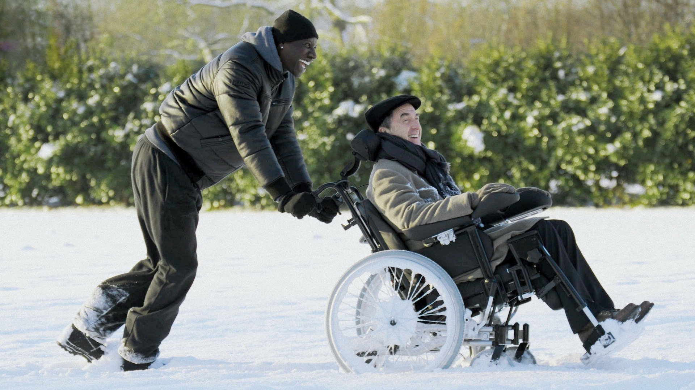

Intocáveis é um filme francês de 2011 que conta a história de Philippe, um milionário tetraplégico que contrata Driss, um jovem problemático, para ser seu cuidador. O filme é baseado em uma história real e mostra como a amizade entre os dois personagens se desenvolve ao longo do tempo.
A história começa com Philippe, que sofreu um acidente de parapente e ficou tetraplégico. Ele vive em uma mansão em Paris com sua filha e sua assistente, mas se sente solitário e desanimado. Quando ele decide contratar um novo cuidador, ele conhece Driss, um jovem problemático que acabou de sair da prisão.
No início, a relação entre os dois é tensa e cheia de desentendimentos. Mas, aos poucos, eles começam a se conhecer melhor e a desenvolver uma amizade sincera. Driss ajuda Philippe a redescobrir a alegria de viver e a enfrentar seus medos, enquanto Philippe ajuda Driss a encontrar um propósito na vida.
Intocáveis é um filme emocionante que mostra como a amizade pode superar as diferenças sociais e culturais. É uma história inspiradora sobre superação e esperança que certamente tocará o coração dos espectadores.
Confira o Trailer abaixo